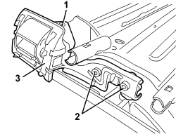
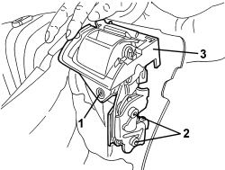

7050A43 SPLIT REAR SEAT ABCKREST ATTACHMENT/LOCKING DEVICE - R.R.
- Path
- Procedures > 70 FITTINGS > 7050 REAR SEATS > 7050A REAR SEAT ASSEMBLY > 7050A43 SPLIT REAR SEAT ABCKREST ATTACHMENT/LOCKING DEVICE - R.R.
- Kind
- repair procedure (removal / refitting; the operation number is the code)
- Applies to
- all engines; all production periods
- Interactive page
- https://sloeber94.github.io/elrnDB/alfa/159/en/#/939004841
Applies to: all engines; all production periods
 Removing
Removing
 Refitting
RefittingOp. 7050A20 ONE-PIECE REAR SEAT CUSHION - R.R.
- If it is necessary to work on the device on the left side, remove the following components.
Op. 7050A15 SPLIT REAR SEAT RIGHT BACKREST - R.R.
Op. 7050A13 SPLIT REAR SEAT LEFT BACKREST - R.R.
Op. 7050B12 REAR SEAT HEAD RESTRAINT - R.R.
Op. 7050B08 GUIDE BUSH FOR HEAD RESTRAINT (ONE) FOR REAR SEAT - R.R
Op. 7050B18 REAR SEAT ARMREST - R+R
Op. 7050A78 SKI FLAP IN REAR SEAT BACKREST - R.R.
Op. 7050D35 LEFT REAR SEAT BACKREST COVER (TWO SEATER) - R.R. WITH BACKREST REMOVED
- If it is necessary to work on the device on the right side, remove the following components.
Op. 7050A15 SPLIT REAR SEAT RIGHT BACKREST - R.R.
Op. 7050B12 REAR SEAT HEAD RESTRAINT - R.R.
Op. 7050B08 GUIDE BUSH FOR HEAD RESTRAINT (ONE) FOR REAR SEAT - R.R
Op. 7050D37 RIGHT REAR SEAT BACKREST COVER (SINGLE) - R.R. WITH BACKREST REMOVED
1. Remove the rivet using a drill.
2. Undo the bolts.
3. Remove the attachment device.

Applies to: all engines; all production periods
Refitting
Removing- Check that the attachment device is not damaged.
- Position the attachment device.
- Tighten the bolts.
- Apply the rivet.
- Refit the following components on the right side.
Op. 7050D37 RIGHT REAR SEAT BACKREST COVER (SINGLE) - R.R. WITH BACKREST REMOVED
Op. 7050B08 GUIDE BUSH FOR HEAD RESTRAINT (ONE) FOR REAR SEAT - R.R
Op. 7050B12 REAR SEAT HEAD RESTRAINT - R.R.
Op. 7050A15 SPLIT REAR SEAT RIGHT BACKREST - R.R.
- Refit the following components on the left side.
Op. 7050D35 LEFT REAR SEAT BACKREST COVER (TWO SEATER) - R.R. WITH BACKREST REMOVED
Op. 7050A78 SKI FLAP IN REAR SEAT BACKREST - R.R.
Op. 7050B18 REAR SEAT ARMREST - R+R
Op. 7050B08 GUIDE BUSH FOR HEAD RESTRAINT (ONE) FOR REAR SEAT - R.R
Op. 7050B12 REAR SEAT HEAD RESTRAINT - R.R.
Applies to: all engines; all production periods; only with equipment: Station Wagon
Removing
Refitting- Alternatively, remove the left or right backrest cover.
Op. 7050D34 TRIM FOR LEFT REAR SEAT BACKREST (TWO SEATER) - R.R.
Op. 7050D36 TRIM FOR RIGHT REAR SEAT BACKREST (INDIVIDUAL) - R.R.
1. Remove the rivet using a drill.
2. Undo the bolts.
3. Remove the attachment device.

Applies to: all engines; all production periods; only with equipment: Station Wagon
Refitting
Removing- Check that the attachment device is not damaged.
- Position the attachment device.
- Tighten the bolts.
- Apply the rivet.
Op. 7050D34 TRIM FOR LEFT REAR SEAT BACKREST (TWO SEATER) - R.R.
Op. 7050D36 TRIM FOR RIGHT REAR SEAT BACKREST (INDIVIDUAL) - R.R.
Topics linked from this page (11)
- 7050A13 SPLIT REAR SEAT LEFT BACKREST - R.R.
- 7050A15 SPLIT REAR SEAT RIGHT BACKREST - R.R.
- 7050A20 ONE-PIECE REAR SEAT CUSHION - R.R.
- 7050A78 SKI FLAP IN REAR SEAT BACKREST - R.R.
- 7050B08 GUIDE BUSH FOR HEAD RESTRAINT (ONE) FOR REAR SEAT - R.R
- 7050B12 REAR SEAT HEAD RESTRAINT - R.R.
- 7050B18 REAR SEAT ARMREST - R+R
- 7050D34 TRIM FOR LEFT REAR SEAT BACKREST (TWO SEATER) - R.R.
- 7050D35 LEFT REAR SEAT BACKREST COVER (TWO SEATER) - R.R. WITH BACKREST REMOVED
- 7050D36 TRIM FOR RIGHT REAR SEAT BACKREST (INDIVIDUAL) - R.R.
- 7050D37 RIGHT REAR SEAT BACKREST COVER (SINGLE) - R.R. WITH BACKREST REMOVED